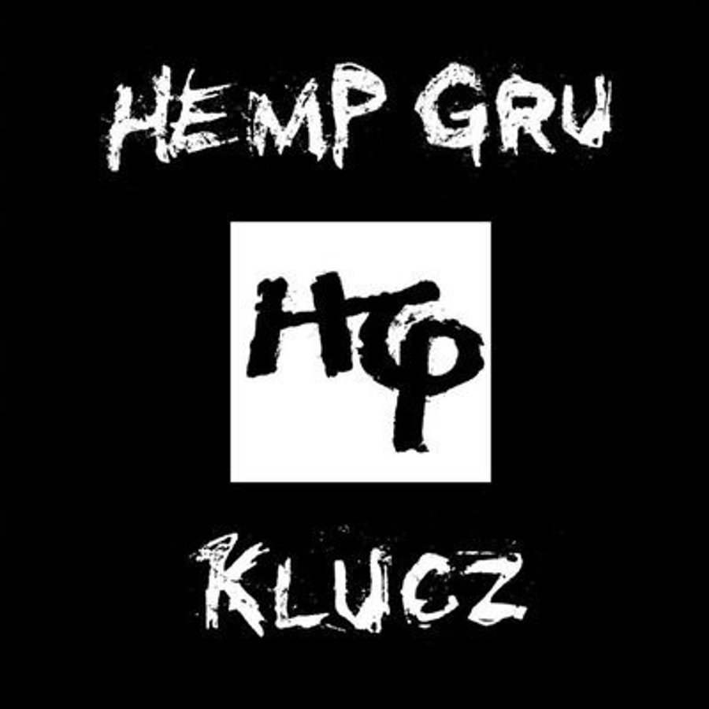

Klucz – pierwszy album studyjny warszawskiego zespołu Hemp Gru. Premiera albumu miała miejsce 6 grudnia 2004. Płyta dotarła do 20. miejsca listy OLiS w Polsce[1].
Gościnnie na płycie wystąpili: Kaczy, Josef, Kubano, Sokół (WWO), Plankton, Pono, Koras, Felipe, Romeo, Żary, Asfalt, Pablopavo (Vavamuffin) i Włodi (Molesta Ewenement). Pochodząca z albumu piosenka „Cudowny dzieciak” znalazła się na liście 120 najważniejszych polskich utworów hip-hopowych według serwisu T-Mobile Music[2].
Track list:
„Intro” (produkcja: Waco) - 1:29
„Nienawiść” (produkcja: Hemp Gru, Waco, gościnnie: Kaczy) - 4:24
„To jest to” (produkcja: Hemp Gru, Waco, scratche: DJ Brzydal) - 3:50
„Nie zapomnę” (produkcja: Hemp Gru, Waco, gościnnie: Josef, Kubano, scratche: DJ Mario) - 4:55
„Poza kontrolą” (produkcja: Hemp Gru, Waco, gościnnie: Sokół) - 3:51
„Kolo skit” (produkcja: Waco) - 1:10
„Ej ty kolo” (produkcja: Kuba O., gościnnie: Plankton) - 3:02
„Jestem” (produkcja: Hemp Gru, Waco) - 3:39
„Czy to prawda?” (produkcja: Włodi) - 3:24
„Życie Warszawy” (produkcja: Hemp Gru, Waco, gościnnie: Pono, Koras, Felipe, Romeo, Ero, scratche: DJ Brzydal) - 4:03
„Napad skit” (produkcja: Waco) - 0:44
„Sami swoi” (produkcja: Niewidzialna Ręka, gościnnie: Kaczy, Żary, scratche: DJ Mario) - 4:37
„Cudowny dzieciak” (produkcja: Hemp Gru, Waco, gościnnie: Hudy, Suja) - 5:32
„Na krawędzi 2” (produkcja: DJ 600V, gościnnie: Żary, Asfalt) - 4:43
„Projekt negatyw” (produkcja: Hemp Gru, Waco, gościnnie: Pablopavo, scratche: DJ Mario) - 4:42
„operacja skit” (produkcja: Waco) - 1:10
„Zjedz skręta” (produkcja: Hemp Gru, Waco, gościnnie: Żary, scratche: DJ Mario) - 4:24
„Emokah” (produkcja: Hemp Gru, Waco, gościnnie: Włodi, Żary, scratche: DJ Mario) - 3:22
„Jak to było” (produkcja: Vienio, gościnnie: Plankton) - 4:27
„Kanar skit” (produkcja: Waco) - 0:56
„Styl warszawskich ulic” (produkcja: Hemp Gru, Waco, scratche: DJ Mario) - 3:49

Realise: 6 December 2004
Artist: Hemp Gru
Genere: Hip-Hop
Publisher: Prosto
© 2021 something here about an author of this page